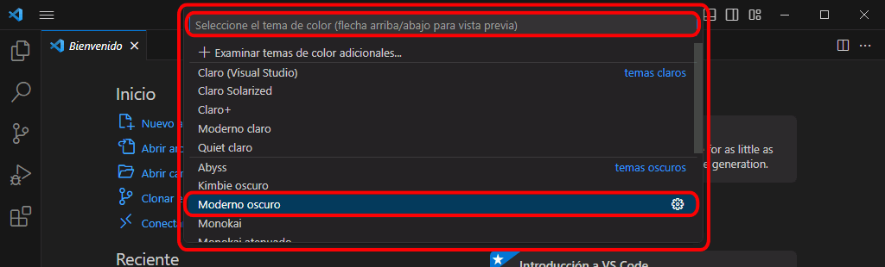
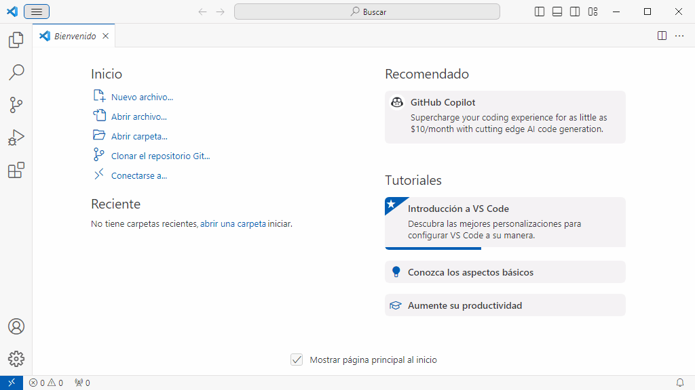
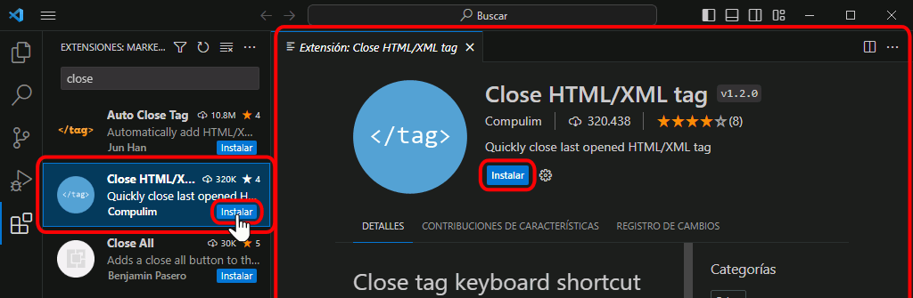
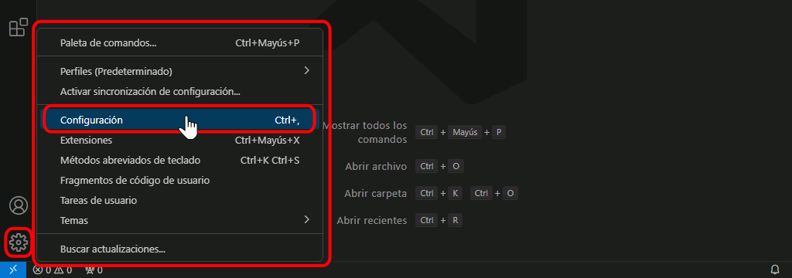
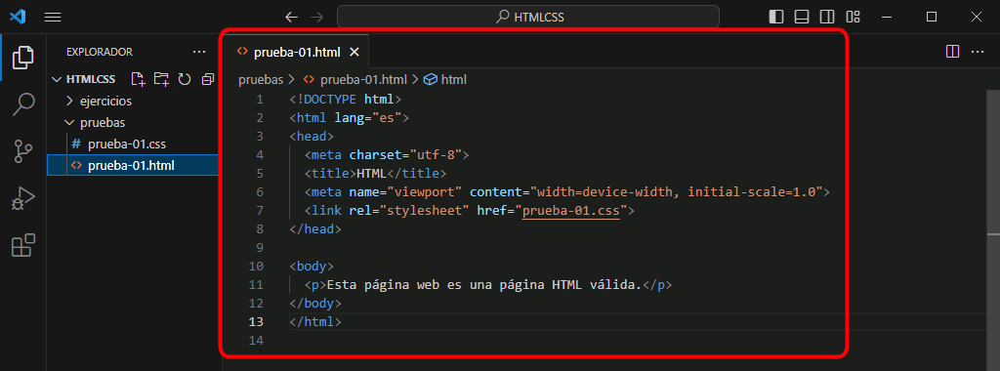
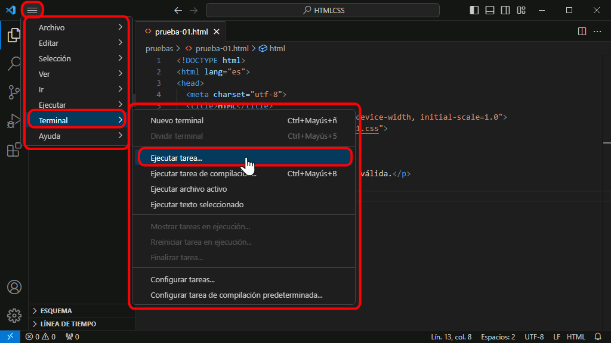
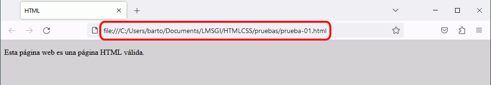
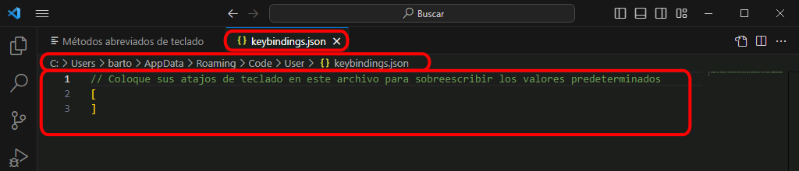

Visual Studio Code puede ser personalizado en muchos aspectos: el aspecto estético, los procesos de trabajo, las herramientas de desarrollo específicas, etc. En esta lección se comenta cómo están organizadas las opciones de personalización, que se encuentran separadas en siete áreas:
los paquetes de idiomas permiten traducir el interfaz a muchos idiomas, entre ellos el español
los Temas de color permiten personalizar el color y color de fondo de todos los elementos del interfaz
Visual Studio Code se instala en inglés, pero se puede cambiar al español instalando el paquete de idioma español (existen paquetes de idiomas para muchos idiomas).
Al iniciar Visual Studio Code, si el sistema operativo está en español, VSC ofrece durante unos segundos la opción de instalar automáticamente el paquete de idioma español. Para ello:
Haga clic en el botón "Instalar y reiniciar":
Al reiniciarse, Visual Studio Code mostrará su interfaz en español. En la barra de actividades se mostrará la extensión Spanish Language Pack en el apartado de extensiones habilitadas:
Si no se muestra la opción de instalar automáticamente el paquete español, la instalación puede realizarse manualmente. Los pasos a seguir son los siguientes:
Haga clic en el icono de Extensiones de la barra de actividades. Se desplegará la barra de actividades mostrando las extensiones recomendadas y las extensiones disponibles, ordenadas por popularidad:
Escriba en el cuadro de búsqueda la palabra Spanish. Se mostrarán las extensiones relacionadas:
Haga clic en los botones Install de la barra de actividades o del panel informativo para instalar la extensión.
Una vez instalada la extensión, Visual Studio Code mostrará un aviso indicando que se debe reiniciar para cargar la extensión. Haga clic en el botón Yes "Restart Now" del aviso.
Al reiniciar, Visual Studio Code mostrará el interfaz en español. En la barra de actividades se mostrará la extensión Spanish Language Pack en el apartado de extensiones habilitadas:
Temas de color de Visual Studio Code
Visual Studio Code incluye varios temas de color, que determinan la combinación de colores con el que se muestran las páginas web o los programas editados (color de fondo, de texto o de los elementos). Los temas de color se clasifican en tres grandes grupos: oscuro, claro y de alto contraste.
El tema de color predeterminado es el tema oscuro llamado Dark+.
Estos son los pasos a realizar para cambiar el tema de color en Visual Studio Code:
Elija la opción de menú Archivo > Preferencias > Tema de color, o bien haga clic en el icono Administrar (con forma de rueda dentada) situado en la esquina inferior izquierda y elija la opción de menú Tema de color:
Se mostrará la lista de temas instalados, con el tema actual resaltado con una franja azul oscura. En esta lista se puede escribir texto para filtrar la lista.

Haga clic en el tema que quiera aplicar. En estos apuntes se utiliza el tema Dark+ (default dark), pero si se quisiera cambiar a otro tema, por ejemplo el tema Light+ (default light), basta con seleccioanrlo en la lista:
Inmediatamente, se aplicará el tema elegido:

Espacios de trabajo de Visual Studio Code
Nota: El término inglés Workspace está traducido al español en Visual Studio Code de dos formas distintas: Espacio de trabajo o Área de trabajo. En estos apuntes se utilizará la denominación de Espacio de trabajo, salvo cuando se haga referencia al interfaz de Visual Studio Code en el que aparezca el término Área de trabajo (por ejemplo, opciones de menús).
Visual Studio Code permite trabajar con dos tipos de espacios de trabajo:
Carpetas
El espacio de trabajo "clásico" de Visual Studio Code es simplemente una carpeta y todo su contenido (incluidas subcarpetas). Esa carpeta es la carpeta raíz del espacio de trabajo.
Para abrir una carpeta (es decir, un espacio de trabajo "clásica"), elija la opción de menú Archivo > Abrir carpeta ... y seleccione la carpeta que desee como carpeta raíz del espacio de trabajo.
Para cambiar de espacio de trabajo, elija la opción de menú Archivo > Abrir carpeta ... y seleccione una carpeta distinta. La opción de menú Archivo > Abrir reciente permite abrir directamente alguna de los últimos espacios de trabajo utilizados.
Epacios de trabajo
Desde la versión 1.18 (octubre de 2017), Visual Studio Code permite también crear espacios de trabajo que incluyan varias carpetas distintas (y todas las subcarpetas incluidas en ellas).
La opción de menú Archivo > Agregar carpeta al espacio de trabajo ... permite añadir carpetas al espacio de trabajo. A continuación se debe guardar el espacio de trabajo con la opción de menú Archivo > Guardar espacio de trabajo como .... Posteriormente, los espacios de trabajo se pueden abrir con la opción de menú Archivo > Abrir el Espacio de trabajo ...
Si no hay abierto ninguna carpeta o espacio de trabajo, la barra de estado de Visual Studio Code se muestra de color morado:
Al abrir una carpeta o un espacio de trabajo, la barra de estado de Visual Studio Code se muestra de color azul:.
Nota: En los cursos de mclibre. org (HTML/CSS, Python o PHP) se recomienda utilizar carpetas (espacios de trabajo de una sola carpeta), no espacios de trabajado de varias carpetas, simplemente por mantener separado el trabajo realizado en cada asignatura (o módulo formativo).
Extensiones de Visual Studio Code
Las extensiones de Visual Studio Code permiten ampliar las características del editor. Las extensiones están disponibles en la web Visual Studio Code Marketplace. En esta web se pueden buscar extensiones y consultar detalles de las extensiones (características, número de instalaciones, precio, comentarios y valoraciones de los usuarios, ayuda disponible, etc.), aunque la instalación se realiza desde el propio Visual Studio Code.
Instalar extensiones
Estos son los pasos a realizar para instalar extensiones en Visual Studio Code.
Haga clic en el icono de Extensiones de la barra de actividades. Se desplegará la barra de actividades mostrando las extensiones instaladas:
Escriba un término o varios en la caja de texto de búsqueda, y se mostrarán las extensiones relacionadas.
Haga clic en el nombre de la extensión para abrir una pestaña con información detallada.
Para instalar una extensión, haga clic en el botón Instalar correspondiente.

Tras unos segundos, se descargará e instalará la extensión. Las extensiones que requieren reiniciar Visual Studio Code muestran un mensaje indicándolo.
Para salir del buscador de extensiones y volver a ver la lista de extensiones haga clic en el icono situado en la parte superior.
Visual Studio Code mostrará la extensión recién instalada en la lista de extensiones instaladas.
Preferencias de configuración de Visual Studio Code
Visual Studio Code organiza las preferencias de configuración en dos niveles.
configuración de usuario: estas preferencias se aplican a cualquier documento editado independientemente de su ubicación
configuración de espacio de trabajo: estas preferencias se aplican únicamente a los ficheros contenidos en un espacio de trabajo o en una determinada carpeta o en sus subcarpetas
La configuración de espacio de trabajo debe realizarse para cada espacio de trabajo y se guarda en una carpeta oculta llamada .vscode que se crea en la carpeta raíz del espacio de trabajado.
Estos son los pasos a realizar para editar el archivo de preferencias de configuración:
Elija la opción de menú Archivo > Preferencias > Configuración, o bien haga clic en el icono Administrar (con forma de rueda dentada) situado en la esquina inferior izquierda y elija la opción de menú Configuración:

Se abrirá una pestaña con las preferencias de configuración. Si no hemos abierto ninguna carpeta ni espacio de trabajo, esta ventana muestra únicamente las preferencias globales (Usuario):
Nota. En las primeras versiones de Visual Studio Code esta ventana mostraba el contenido del fichero settings.json. Desde la versión 1.27 (septiembre de 2018), esta ventana muestra las preferencias con el aspecto de una página web.
Si hemos abierto una carpeta o un espacio de trabajo, la pestaña permite elegir entre mostrar únicamente las preferencias globales (Usuario) o incluyendo las preferencias del espacio de trabajo o de la carpeta abierta:
Para cambiar una preferencia de configuración ...
Despliegue el menú correspondiente a la preferencia:
y elija la opción de menú deseada (en otras preferencias de configuración basta con marcar o desmarcar una casilla)
Tenga en cuenta que los cambios realizados se guardan automáticamente:
Para ver únicamente las preferencias modificadas
Haga clic en el icono de tres puntos situado en la parte superior derecha y elija la opción "Mostrar la configuración modificada":
De esta manera se mostrarán únicamente las preferencias modificadas:
Las modificaciones realizadas se guardan en dos ficheros settings.json,
uno para las preferencias globales (Usuario), que en Windows 10 se guarda en la carpeta C:\Users\NombreDeUsuario\AppData\Roaming\Code\User\
otro para las preferencias de la carpeta o espacio de trabajo, que se guarda en una carpeta .vscode que se crea en la raíz del espacio de trabajo.
Si se van a realizar muchas modificaciones o se quiere aplicar un conjunto de modificaciones ya definido (por ejemplo, las modificaciones que se proponen en los cursos de HTML/CSS, Python o PHP de estos apuntes), es más cómodo trabajar directamente con los archivos settings.json, aunque se debe tener cuidado en no cometer errores sintácticos (olvidar alguna comilla, coma, o llave, por ejemplo). Si edita un archivo settings.json, debe guardar el archivo explícitamente, las modificaciones no se guardan automáticamente.
Para abrir el archivo settings.json global (Usuario), asegúrese de que está viendo las preferencias globales (Usuario) y haga clic en el icono de documento situado en la parte superior derecha
Se abrirá una nueva pestaña mostrando el nombre del fichero, su ubicación en el disco y el contenido. En la captura del ejemplo siguiente, se muestra el valor modificado en el ejemplo anterior.
Para abrir el archivo settings.json del espacio de trabajo, asegúrese de que está viendo las preferencias incluyendo las del espacio de trabajo y haga clic en el icono de documento situado en la parte superior derecha
Se abrirá una nueva pestaña mostrando el nombre del fichero, su ubicación en el disco y el contenido. En la captura del ejemplo siguiente, el fichero está vacío porque no se ha modificado ninguna preferencia en el espacio de trabajo.
El archivo settigns.json del espacio de trabajo se crea en cuanto se abre (aunque después no se modifique), por lo que se mostrará en el Explorador de la barra de actividades. El fichero se puede abrir y editar abriéndolo como cualquier otro fichero.
Tareas de Visual Studio Code
Las tareas de Visual studio Code permiten automatizar el uso de programas ajenos al propio editor. Las tareas se definen por escrito en un archivo (tasks.json) y se pueden invocar a través del interfaz o mediante atajos de teclado. El resultado de la ejecución de las tareas se suele mostrar en la ventana de Terminal.
Las tareas van asociadas a los espacios de trabajo, por lo que es necesario abrir una carpeta o espacio de trabajo para poder crear tareas.
Estos son los pasos a realizar para crear una tarea en Visual Studio Code.
Elija la opción de menú Terminal > Configurar Tareas.
Si el archivo tasks.json no existe, se mostrará la opción "Crear archivo tasks.json desde plantilla". Haga clic en esta opción:
Se mostrará una lista de plantillas de tareas. Haga clic en la opción "Others":
Se mostrará en una pestaña el archivo de tareas tasks.json con una tarea de ejemplo. Observe que el archivo tasks.json se ha creado en una carpeta .vscode en la raíz del espacio de trabajo.
Al crearse, este fichero contiene un ejemplo de tarea que simplemente muestra el mensaje "Hello" en el terminal:
{
// See https://go.microsoft.com/fwlink/?LinkId=733558
// for the documentation about the tasks.json format
"version": "2.0.0",
"tasks": [
{
"label": "echo",
"type": "shell",
"command": "echo Hello"
}
]
}
Modifique el contenido del archivo tasks.json con la(s) tarea(s) deseada(s) y guarde el archivo.
El archivo tasks.json se crea en la carpeta .vscode que se crea en la raíz del espacio de trabajo. Esto permite utilizar la tarea en todos los archivos del espacio de trabajo. Pero si abrimos otro espacio de trabajo y queremos utilizar la misma tarea tendremos que crear de nuevo la tarea (o copiar el archivo tasks.json).
Utilizar una tarea
Para utilizar cualquiera de las tareas creadas, siga los pasos siguientes:
Abra en una pestaña la página web a la que quiera aplicar la tarea:

Elija la opción de menú Terminal > Ejecutar tarea ....

Se mostrará un cuadro con las tareas disponibles. Haga clic en la tarea que quiera aplicar:
El resultado obtenido depende de la tarea elegida. En el caso de la tarea de ejemplo de las capturas, se abriría en el navegador elegido la página elegida:

Atajos de teclado de Visual Studio Code
Visual Studio Code dispone de un gran número de atajos de teclado para acceder rápidamente a muchas de sus funciones, pero también se pueden crear nuevos atajos de teclado para optimizar los procesos de trabajo..
Estos son los pasos a realizar para crear o modificar atajos de teclado en Visual Studio Code.
Elija la opción de menú Archivo > Preferencias > Métodos abreviados de teclado, o bien haga clic en el icono Administrar (con forma de rueda dentada) situado en la esquina inferior izquierda y elija la opción de menú Métodos abreviados de teclado:
Se mostrará en una pestaña el archivo de atajos de teclado predeterminados de Visual Studio Code. Haga clic en el icono de documento situado en la parte superior derecha :
Se abrirá una pestaña mostrando el fichero global de atajos de teclado keybindings.json. Como en el caso del archivo de configuración global (Usuario), este archivo se encuentra en Windows en la carpeta C:\Users\NombreDeUsuario\AppData\Roaming\Code\User\.

Inicialmente, este fichero no contiene ninguna definición:
// Coloque sus atajos de teclado en este archivo para sobrescribir los valores predeterminados
[
]
Modifique el contenido del archivo keybindings.json con los atajos de teclado deseados y guarde el archivo:
Tenga en cuenta que el archivo keybindings.json se crea en la carpeta C:\Users\Usuario\AppData\Roaming\Code\User. Por tanto, los atajos de teclados se pueden utilizar en todas los espacios de trabajo o carpetas. Pero si un atajo ejecuta una tarea y la tarea no está definida definida en el espacio de trabajo, el atajo no producirá ningún resultado.
Otros temas relacionados con la personalización
Rutas en archivos JSON
En los archivos de configuración en formato JSON (settings.json, tasks.json, keybindings.json, etc.), las rutas del sistema operativo se deben escribir con barras simples (/) o con contrabarras dobles (\\), pero no se pueden escribir con contrabarras simples (\). La razón es que la contrabarra simple es el carácter de escape, que sirve para indicar los caracteres especiales (por ejemplo \n significa salto de línea, \t significa tabulador, \\ significa contrabarra simple, etc.).
// PHP: Validate: Executable path
// Ubicación del intérprete de PHP.
"php.validate.executablePath": "C:/xampp/php/php.exe",
// PHP: Validate: Executable path
// Ubicación del intérprete de PHP.
"php.validate.executablePath": "C:\\xampp\\php\\php.exe",
// PHP: Validate: Executable path
// Ubicación del intérprete de PHP.
"php.validate.executablePath": "C:\xampp\php\php.exe",